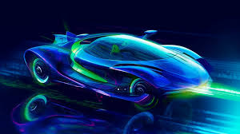

The Future of Cars is already here!
In a futuristic metropolis, the skies are alive with the graceful dance of flying cars, weaving through towering skyscrapers and leaving trails of neon light in their wake. These sleek vehicles effortlessly soar above the cityscape, transforming the once two-dimensional streets into a dynamic and multi-dimensional transportation network. With the hum of anti-gravity propulsion systems, commuters navigate the urban skyline with unprecedented speed and convenience, bypassing traditional traffic constraints and ushering in a new era of efficient, airborne travel. The horizon is no longer limited by the asphalt below, as flying cars redefine the boundaries of mobility in this cutting-edge world.
Where Cars Fly
In a futuristic metropolis, the skies are alive with the graceful dance of flying cars, weaving through towering skyscrapers and leaving trails of neon light in their wake. These sleek vehicles effortlessly soar above the cityscape, transforming the once two-dimensional streets into a dynamic and multi-dimensional transportation network. With the hum of anti-gravity propulsion systems, commuters navigate the urban skyline with unprecedented speed and convenience, bypassing traditional traffic constraints and ushering in a new era of efficient, airborne travel. The horizon is no longer limited by the asphalt below, as flying cars redefine the boundaries of mobility in this cutting-edge world.
Where are cars flying!
Within a visionary cityscape, flying cars elegantly traverse the skies, gliding amidst towering skyscrapers and casting vibrant streaks of neon illumination. These streamlined vehicles effortlessly navigate the urban landscape, converting once static streets into a dynamic, multidimensional transport grid. Powered by silent anti-gravity propulsion, commuters now traverse the city skyline swiftly and conveniently, breaking free from the confines of traditional ground-level traffic. In this advanced realm, flying cars reshape the concept of mobility, pushing the boundaries beyond the conventional limits of terrestrial transportation.